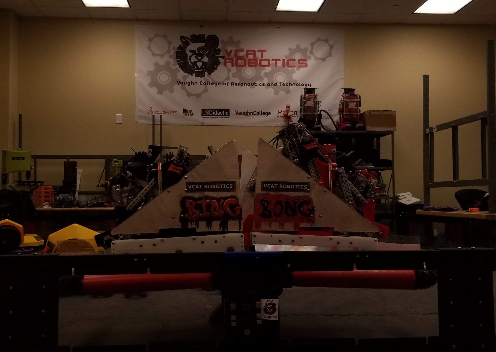
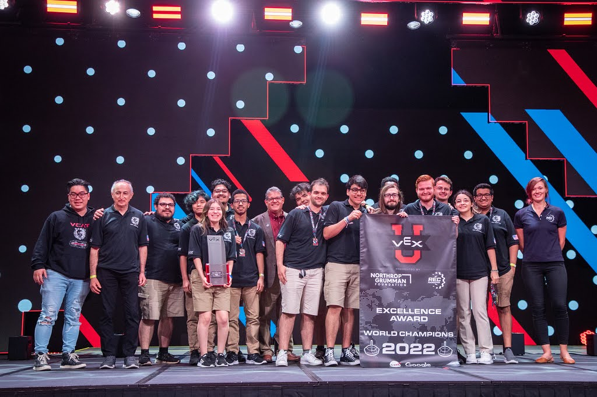

During my senior year with the VCAT Robotics VEXU team, I helped design and build an autonomous robot capable of self-localization using odometry and adaptive autonomous routines. The robot could detect when a planned strategy wasn't working and dynamically adjust its actions to recover and continue performing effectively. Our team's hard work paid off-we won Excellence Awards at every regional competition and at the World Championship. As the senior member with the most experience, I enjoyed mentoring teammates, empowering them to take ownership while keeping us highly competitive.
Technically, the robot evolved from an initial frame built with VEX c-channel to a refined structure incorporating 3D printed, CNC milled, and laser-cut parts, all designed in SolidWorks. The software was developed in C++ using VEX's API.
Personally, this project taught me team leadership, complex algorithm design, and how to manage evolving hardware and software requirements in a competitive setting. I'd be happy to dive deeper into any aspect of this project-just ask!
Strategy
- Created fallback logic for autonomous routines
- Used odometry for self-localization and decision branches
- Mentored younger team members on subsystem ownership
- Balanced performance and teachability across the team
Execution
- Designed chassis and custom parts in SolidWorks
- Started with VEX c-channel, migrated to CNC/3D printed parts
- Programmed in C++ using VEX's API with modular architecture
- Tested adaptive routines under real match conditions
More technical information about this project can be found here!
Highlights
CAUTION! VIDEOS MAY BE LOUD!
New Car Smell
After constructing the final version of the competition robots, one should ensure that they are functional.
We did that by drfting them.
While they look similar, the two robots were slightly different in that their arms were of different lengths.
They were later labeled "Bing" and "Bong" as an homage to the NYC subway system with their door closing chime.
SUBWAY STYLE

One of the best moments came from failure. The team scrimmaged another team the night before a home competition. We were beat every match. This led to us staying up that night figuring out a way to counterract. We modified the robots to climb the platform by filing down the underside of the robot into a ramp. This gave us a good start and allowed us to reach the finals of the competition. To more effectively climb the platform a "subway" method was adopted where a robot would clamp onto a mobile goal that the other was carrying. This is shown in the video above. This was after the robots were recently rebuilt into their current version. We were also very excited to see that we had more win conditions due to this method, which could be heard in the video. It was given the name subway as its similar to how trains would connect to each other when travelling. These were also designed in NYC where the metro system is the subway.
*thump* *thump* DEFENSE!
*thump* *thump* DEFENSE!

The above is a wing mechanism. After being bullied into penalties (legally), we decided that we needed to do the same just in case. We did this by creating wings that unfold. Looking at them from afar, they look like decals. However, if you ended up in our zone, we would make them drop down to corral you into a corner. If caught there after a certain point, any contact with us would cause you to have a penalty. Other robots completed this same task by pushing their opponents. Ours waited for the opponent to entrap themselves. We were the only team with wings. Naming these were fairly simple as the school we competed as was a flight school. Click this to see the wings in action!.
... And last, but not least!

Our documentation and our performance throughout the year allowed us to receive the excellence award at the VEXU WORLD CHAMPIONSHIP.
This made us World Champions!
Here
is a video documentary of the event!
Here
is our skills runs at the world championship.
The first section is a bit blurry and the robots are running autonomously.
The next section is a lot clearer and the robots are running under operator control.